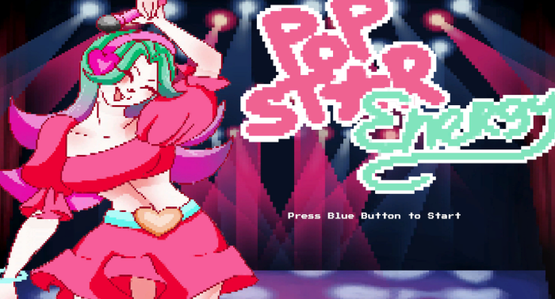

I did this project with a group of 7 other people. Me and 1 other programmer built the game while a team of designers made
the player sprites, background, obstacles such as traps and spikes and the blocks that we used to build the floor and platforms.
Ik heb dit project samengewerkt met 7 andere personen. Samen met een andere programmeur bouwden we de game terwijl de 6 designers
in ons team de sprites, achtergronden en obstakels zoals berenvallen en stekels. Ook tekende ze de platformen en grond waarom de speler
rend.

The assignment for the designers was to choose one of the themes and think of a project surrounding that theme.
I had nothing to do those 3 weeks because we as programmers had to wait for the designers to think of something. After that we
all came together and talked about each person's ideas. The idea we decided to make a reality was a game about running endlessly
through while collecting energy drinks to go increase the speed. The game was going to have randomly generated parcour that would
increase in difficulty because of the higher speeds.
De opdracht voor de ontwerpers was om een onderwerp te kiezen en daarmee een project verzinnen.
Hiervoor hadden ze 3 weken. In de tussentijd konden de programmeurs niks doen dus moesten we gewoon wachten.
Daarna kwamen we samen om de ideeën uit te leggen en ons project te kiezen. Het gekozen idee was een spel waar je oneindig
bleef rennen terwijl je energiedrankjes verzamelde om sneller te gaan, met een random gegenereerd parcour waar het steeds
moeilijker werd door de hogere snelheid.